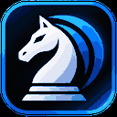

KnightScopeANALYSE. REVIEW. IMPROVE.
AFTER THE GAME
Review your game
See move classifications, accuracy, mistakes and explanations.
Checking this Chess.com tab…
Open a completed game to get started.
Looking for a Chess.com game…
DURING OR AFTER A GAME
Best move analysis
Use the Stockfish and Maia tools from Best Move to explore positions and candidate moves.
Live position toolsBest-move suggestions and alternative lines on Chess.com.
Position analysisOpen the full analysis board, load a game or paste a PGN.
CustomisationKeep your existing board, piece and panel settings.
The live panel appears on Chess.com pages.